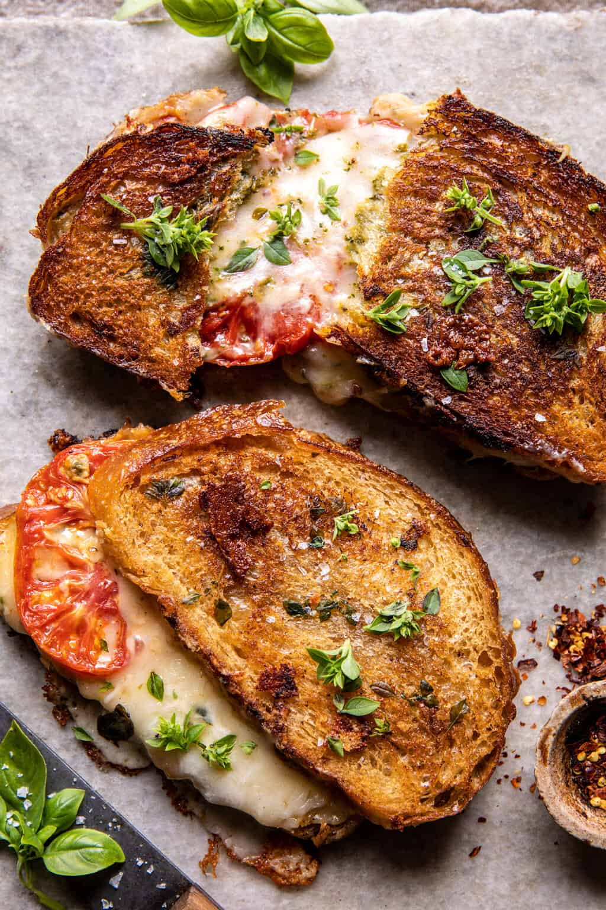

Roasted Garlic Caprese Grilled Cheese

Description
Slow roasted summer tomatoes and sweet roasted garlic, sandwiched between slices of sourdough bread with fresh basil pesto and mozzarella cheese. Then pan-fried until the cheese is melty and the bread is crisp. Tis’ a true end-of-summer delight.
Ingredients
- 2 tablespoons extra virgin olive oil
- 2 heirloom tomatoes, sliced
- 4-6 cloves garlic, left in skin and smashed
- kosher salt and black pepper
- red pepper flakes
- 1/4 cup basil pesto
- 4 slices sourdough bread
- 2 tablespoons fig preserves (optional)
- 1 1/2 cups shredded mozzarella
- 1/4 cup grated parmesan
- 1 cup fresh basil leaves
- 4 tablespoons salted butter, at room temperature
Steps
- Preheat oven to 425° F.
- Arrange the tomato slices on a parchment-lined baking sheet. Scatter the smashed garlic cloves around the tomatoes. Drizzle everything with olive oil and season with salt pepper, and chili flakes. Bake 20-25 minutes, until tomatoes are deeply roasted.
- Remove the garlic from the pan and pop the cloves out of the skin. Mash the cloves with a fork into a paste. Mix the roasted garlic with the basil pesto.
- Brush the outside of each slice of bread with butter. On the inside of half of the slices of bread, spread with fig preserves. Evenly layer the cheeses, the tomatoes, pesto, and the remaining cheese. Add the top piece of bread.
- Melt 1-2 tablespoons butter in a large skillet over medium heat. Place the sandwiches in the skillet and cook until golden on each side, about 3-5 minutes per side.
- EAT and ENJOY!
Source: Half-Baked Harvest